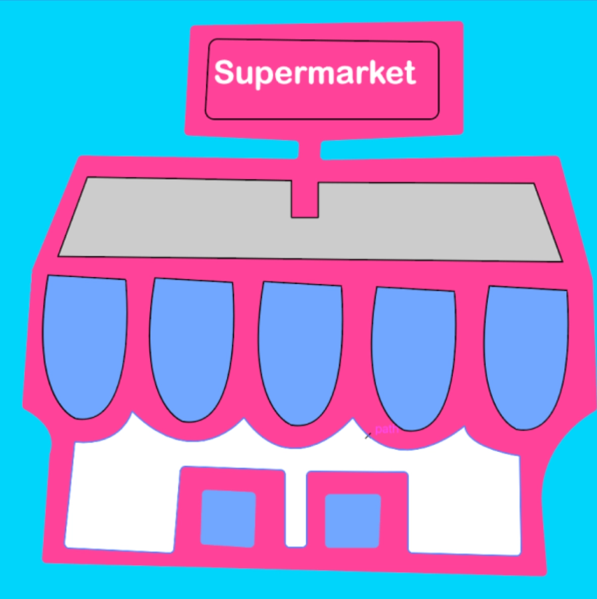

Grundlæggende animation
Tema beskrivelse
“Grundlæggende animation” var vores 4. tema. Temaet omhandlede:
Se projekt
Min arbejdsproces
I processen med at udarbejde et spildesign, blev jeg både inspireret af et spil jeg selv havde spillet som barn og et spil jeg fandt på nettet og lavede en analyse af. Derudfra designede jeg mine spilelementer og spilbaggrunde i Adobe illustrator.
Jeg skulle kode mit eget spil og vi brugte Java Script, som var et nyt kodningssprog vi skulle lære. Java Script gjorde at der blandt andet kom bevægelse på spilelementerne.
Da jeg skulle opbygge spillets struktur, blev vi blev introduceret til aktiveringsdiagrammer som hjalp med at strukturere spillets opbygning. Da strukturen var på plads satte jeg det ind i et statemachinediagram, som er et mere detaljeret diagram som har flere funktioner, herunder lyd og bevægelser. Lydene i spillet optog jeg selv. Gennem processen havde jeg udfordringer med ide og gennemførsel, men endte med et enkelt spil.
Værktøjer jeg har brugt i forløbet
Se billeder af proces- brug musen